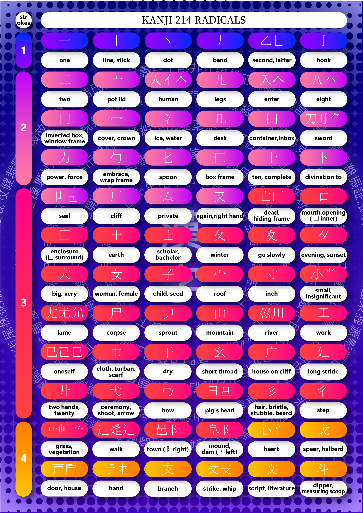
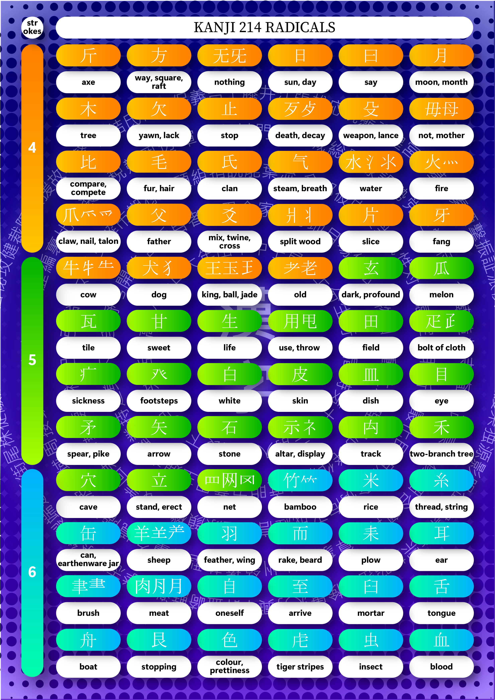
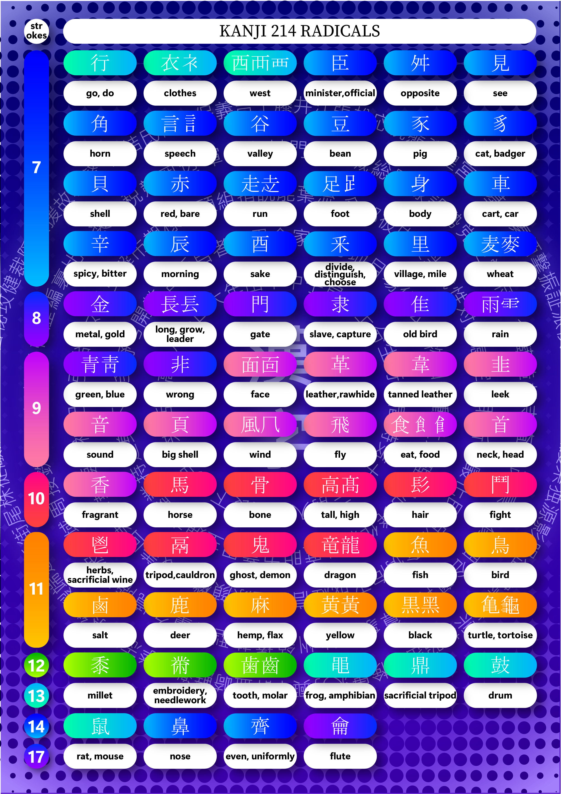

Trithod Site
https://kanjialive.com/214-traditional-kanji-radicals/
https://en.wikipedia.org/wiki/List_of_kanji_radicals_by_stroke_count
  
https://kanjialive.com/214-traditional-kanji-radicals/
https://en.wikipedia.org/wiki/List_of_kanji_radicals_by_stroke_count
ENG
ไทย